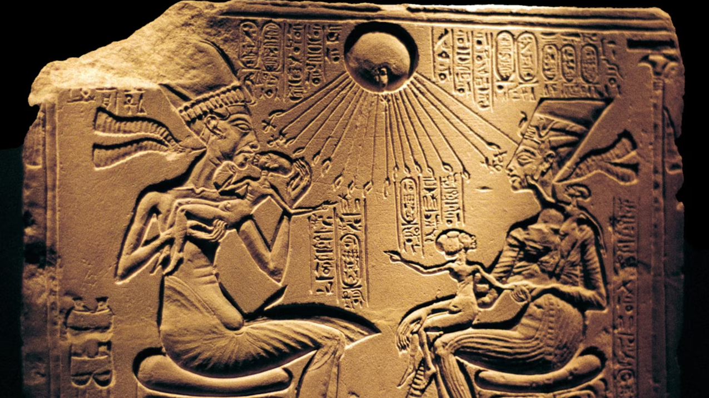
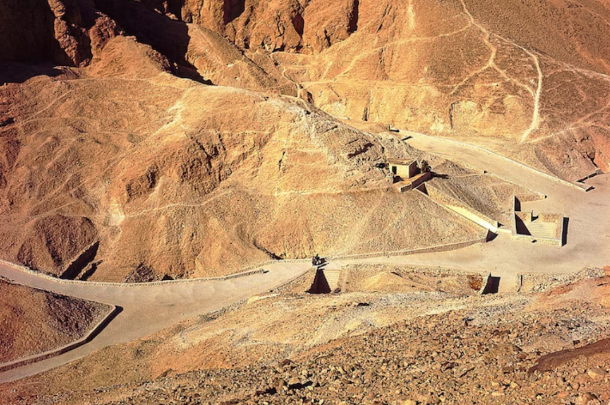
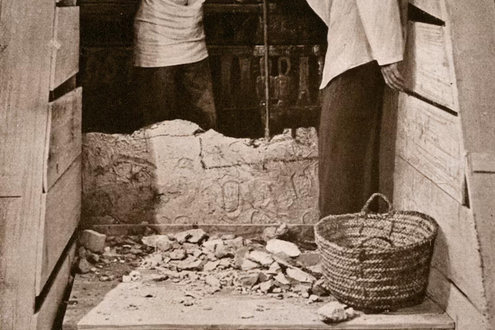
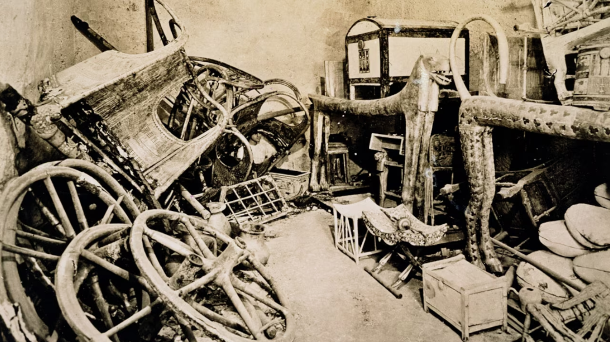
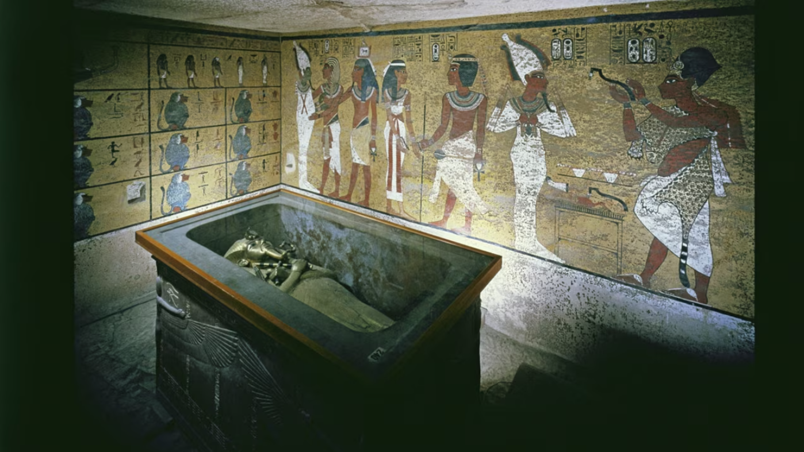
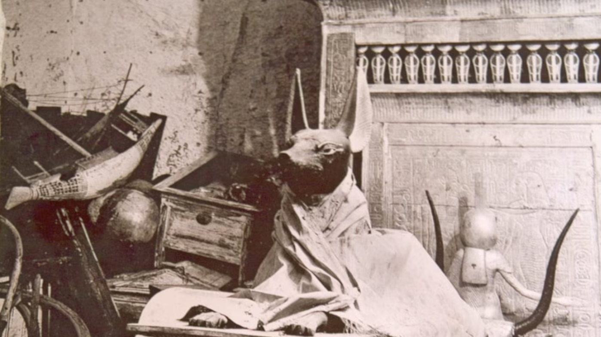

The air was hot and musty as the explorers made a hole in the plaster-filled doorway of the ancient Egyptian tomb. No one had seen inside this royal resting place for 3,000 years, and they didn’t know what they would find.
When archaeologist Howard Carter held up a candle to peer inside on November 26, 1922, the light glinted on golden objects. This tomb, belonging to the Pharaoh Tutankhamun, would soon become the most famous ancient Egyptian discovery of all time.
Meet this ancient ruler
Pharaoh Tutankhamun—Tut for short—ruled over ancient Egypt from about 1333 to 1323 B.C. He became king when he was just nine years old during a challenging time in ancient Egyptian history.
Tut’s father, Akhenaten, had tried to change the religious beliefs of the land. He wanted Egyptians to worship just one god—the sun, called Aten—instead of the 2,000 gods that people had believed in for thousands of years. The priests, elites, and common people probably disliked this change, but they had to follow their pharaoh’s orders, or at least appear to: Archaeologists have found small statues of the old gods in people’s houses from around this time.

After Akhenaten died, nine-year-old Tut took the throne. He repaired the old temples and paid for new statues of the gods, changing the religious practices back to the way things used to be. He even changed his name: His birth name had been Tutankhaten (the last two syllables honored the sun god), but he changed to Tutankhamun after taking the throne.
As king, Tut would have participated in religious ceremonies and festivals, gone on hunting trips, learned how to ride horses and drive chariots, and trained in military skills.
But Tut didn’t have a lot of time to rule—he died around age 19. Experts aren’t sure if his death was caused by an injury from a chariot crash, a mosquito-borne illness, a bone disease, or some combination of these. Whatever the reason, Tut didn’t leave behind any children, so the throne went to his advisor Ay.
The forgotten pharaoh
Most pharaohs’ tombs from this time were cut deep into the rock and contained many rooms. But Tut’s mummified body was placed in an unusually small tomb in the Valley of the Kings, a hilly area where pharaohs were buried for about 500 years.
Some experts think that Tut was in the process of building himself a large tomb fit for a pharaoh, but because he died so young, the workers didn’t have time to finish it. Others believe that Ay might have swapped tombs with Tut, putting the young king in the tomb Ay had started for himself.
Whatever the reason, the Tut’s burial was rushed. Spots of mold on the paint inside the tomb show that workers didn’t let the paint fully dry before sealing the tomb.
The pharaohs after the young king wanted people to forget Akhenaten and anyone connected to him—including Tut. Their names were stricken from the list of kings, and statues in their honor were destroyed. Over time, people forgot all about this short-lived king: Just 150 years later, workers built the tomb of Ramses VI almost right on top of Tut’s, having forgotten his tomb was ever there.
The tomb detective
Through the years, other archaeologists working in the Valley of the Kings had found small items—a cup, a jar, a piece of linen—with Tut’s name, but his tomb—or his mummy—had never turned up. Eventually, these experts were certain that they’d found everything in this spot. But British archaeologist Howard Carter believed that Tut’s tomb was still out there to be found.
In 1917, Carter and a wealthy British man, Lord Carnarvon, started searching for Tut, carefully digging in the sand all the way down to the bedrock in each section where they looked so they’d be sure not to miss anything. Years went by without any Tut discovery, and Carnarvon was ready to give up. Carter asked for just a few more months. Three days after starting this latest search, the team uncovered what looked like a step buried in the sand. As they removed the sand and debris, found more steps leading down. Finally, they discovered a plaster doorway stamped with a name: Tutankhamun.
Opening the tomb
But these explorers weren’t sure that they’d find anything inside. Almost all the tombs in the valley had been robbed in ancient times, leaving few items behind. Plus, the plaster showed signs of being broken and resealed.
But when they peered inside the small hole, they found a tomb almost entirely intact. Carter later wrote, “Details of the room emerged slowly from the mist … strange animals, statues, and gold—everywhere, the glint of gold.”
What goes inside a pharaoh’s tomb? The ancient Egyptians believed they needed to fill it with all the stuff that a ruler might need in the afterlife. And since they believed the afterlife would be a lot like normal life, that meant packing everyday items like clothing, food, beds, chariots, headrests, and games. The pharaoh would also need all his ceremonial stuff like thrones, statues, and jewelry. Plus workers added a few “magical” items like shabtis, little human statues that people believed would serve the ruler in the afterlife.
Carter and his team spent more than two months removing and cataloging the more than 600 items in the first room, which he called the antechamber. Things were a bit messy. At least twice, ancient looters had broken into the tomb and rifled through the Tut’s treasures in search of jewelry and other items to sell. Luckily, ancient valley guards stopped the robbers before they could take everything. But the guards didn’t really care about putting things back in order—they just tossed the remaining items back inside the tomb and sealed it up again.
Next, Carter opened the burial chamber. The room contained a large golden shrine, or box, that filled almost the entire space. Inside it—all nested within one another—were three other shrines, a stone sarcophagus, three golden coffins, and finally, the mummy of Tutankhamun.
Carter then excavated a room he called the treasury, filled with a smaller shrine containing Tut’s organs that had been removed during mummification. The room seemed to be guarded by a statue of Anubis, the god of mummification and the dead. Lastly, the team removed the items from a room called the annex, filled with over 2,000 items.
Pharaoh's curse?
Carter spent nearly 10 years removing more than 5,000 objects from the tomb. The discovery and excavation delighted people around the world who followed his work in newspapers and radio. (U.S. president Herbert Hoover even named one of his dogs King Tut.)
But people were fascinated for another reason: Just six months after opening the tomb, Carter’s wealthy funder, Lord Carnarvon, died from an infected mosquito bite. And when Carter gifted an object from the tomb to a friend, that man’s house burned down, was rebuilt, and then flooded. Some say it was punishment for opening Tut’s tomb, but Carter lived for another 17 years
King Tut’s tomb is still the most intact royal Egyptian tomb ever found, giving historians important information about this ancient culture. Although the pharaohs who came after Tut wanted him to be forgotten, today he’s one of the most famous ancient rulers of all time.